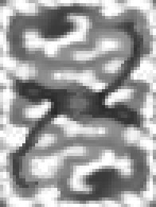

|
The terrain maps in Quake III: Team Arena began as grayscale bitmap art files imported into David Hyde’s “GenSurf” tool, a Q3Radiant plug-in. As mentioned before, the height map is a template that the utility uses to define the vertex heights of the triangles forming the terrain surface. We used Adobe Photoshop and JASC’s Paint Shop Pro to create and adjust our height maps … but any art program that can output a .bmp format file can be used to create the height map.  figure 1. By way of example, the piece of artwork in figure 1 is a greatly scaled up (4X) version of the height map used to create the initial terrain geometry for mpterra2. The very dark, horizontal area near the center is the big “lake” near the center of the map. The dark curves to the upper right and lower left are the “fjord” water areas. The dark areas in the upper left and lower right are the locations of the bases. The white and very light gray areas represent the peaks of hills and mountains. The key to understanding how the height map works is that the shades of gray in the art (call them “color values”) represent the height of mesh vertexes (triangle corners) and not the triangle quads (squares created by two triangles). When you work on a piece of art where each individual pixel corresponds to a vertex, it is easy to imagine the pixels (usually large square blocks) as squares of terrain. But that’s not how it works. Start by giving some thought to the eventual size and proportions of the final terrain area in your map. How many rows and columns of triangles do you want in the map? The finer you subdivide the map (making more rows and columns), the more triangles will appear in any given view, but the terrain can be made less blocky by including more. GenSurf can generate a terrain mesh of up to 64 triangles on a side (of the X and Y dimensions of the entire mesh). If you don’t decimate the GenSurf output (an option that optimizes and reduces the number of triangles used to create the mesh … and we really recommend that you don’t), it generates a mesh of triangles in arranged in quads in neat rows and columns. By way of reference, mpterra2 (the largest Team Arena map) is “only” 48x64 columns and rows of triangles. Since Q3Radiant and q3map tend to like things that end up in neat powers of 2 or units of 64 subdivisions, consider having your map extents (lower left and upper right map corners) fall onto neat units, power of 2 units. In mpterra2, the extents were set up to make the mesh triangles have sides of 256 units.
Figure 2. Figure 2 shows an example of a top view of a terrain mesh that is 8 x 8 rows and colums of triangles (on a side). Just as you would plan out a game map, give thought to the layout and flow of your terrain map. Will it be all-open in one view? Can you use natural terrain features to block vis? How complicated will your buildings (if any) be? Do you want to include trees, water, weather effects or other items that could add to the visual cost of your map? Begin the creation of your height map by making a new grayscale file. If your program doesn’t allow you to easily modify a .bmp format file, work in another format and then convert it when you save. You can make the dimensions of your height map art whatever you want. The extents you set in GenSurf for the map dimensions are what determine the final size of the terrain piece. Some may find it easier to work with a large file initially, using their favorite painting tools to lay in the shades of gray. However, when you get down to making final and precise changes in your height map you should (and this is STRONGLY recommended), change the size of the art file such that the pixel dimensions of the map are 1 pixel larger than the number of divisions (rows and columns) in the terrain mesh you want to create. If you are making a 64 x 64 division map, then you want to create a 65 x 65 pixel height map. If there is not a one-to-one match between the number of vertexes in the mesh (one more than the number of divisions) and the number of pixels in the height map, then GenSurf interpolates the number values (0 to 255 range) of the pixels to get an averaged value instead of an exact value for the height of the vertex at that point. When you save out the height map art file, you must save it in 8-bit .BMP format. Currently, this is the only the file format that GenSurf recognizes. Tips and things to consider for making Height Maps · Read through the section on blocking vis later in the document. Plan your vis blocking terrain structures in advance instead of having to start over when you discover that too much of your world is in view.· Consider what type of geometry will form the edges of your map. The terrain maps in Q3:TA resolve the issue by creating canyon-like settings … valleys bordered by high canyon or mountain walls.· Start by filling your map with a neutral gray (value 127 or 128). Paint the high areas lighter and the low areas darker.· Keep your terrain shapes simple when you start. You can add greater complexity as your map develops.· You will probably want to keep the “playable” area of your map within a fairly close or “narrow” range of gray values close to the middle range of values. This allows you to use very dark shades of gray to create deep chasms and very light shades of gray to create high mountains, canyon walls or visual barriers.· Extreme jumps between the gray values in adjacent areas means steep slopes.· Avoid making vertical or near vertical terrain surfaces … unless you don’t mind the resulting textured surface looking like barcode. Q3Map planar projects the textures onto the terrain entity’s surface (Normal brushes are box mapped). The pixels will stretch and stretch to fill the space. The farther the surface is from horizontal, the greater the stretching.· Use the roughness feature of GenSurf to add a little, um … roughness to your map … so flat areas aren’t completely flat. If you are using a 1 to 1 scale height map, adding “noise” to the file will also accomplish this.· If you want an area, such as a path, to be flat, you need to make the gray value affecting two adjacent vertexes the same value.· You can create gentle slopes by changing the gray values between adjacent areas by very small amounts.· Slopes greater than 45 degrees are close to becoming unplayable barriers.
If you are building a symmetrical team style map, only create one side of the terrain. Create a new piece of art that has the dimensions of the final piece. Paste the map half into the new file and move it into position. If the map will have an even number of vertexes, paste the map again and then rotate or mirror (as you choose) the selection and move it into position. If the number of vertexes is odd, after you paste the first half of the map, select all but the row or column of pixels along which the two halves of the map will face and copy it. Paste it, rotate or mirror it, then position it. Now, select and copy half the row or column of pixels you didn’t copy in the last operation. Paste it, transform it as you did in the last operation, and then position it so that it is in the same row or column, but on the opposite side of the piece you copied. When you make significant changes to a height map, consider saving it as version rather than over-writing the older file. Always nice to have a back up when you realize that you’ve messed up more than you’ve fixed. Back - Table of Contents - Other Height Map Tools
|